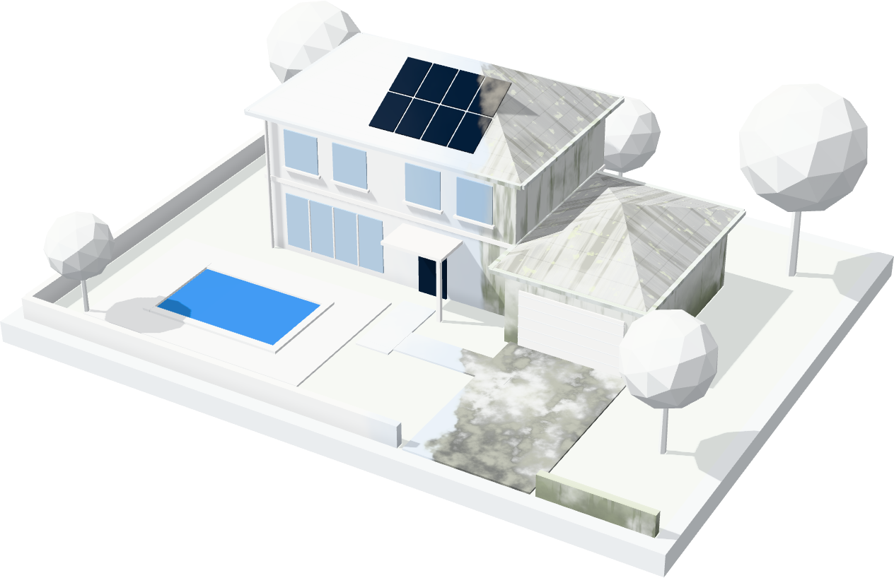
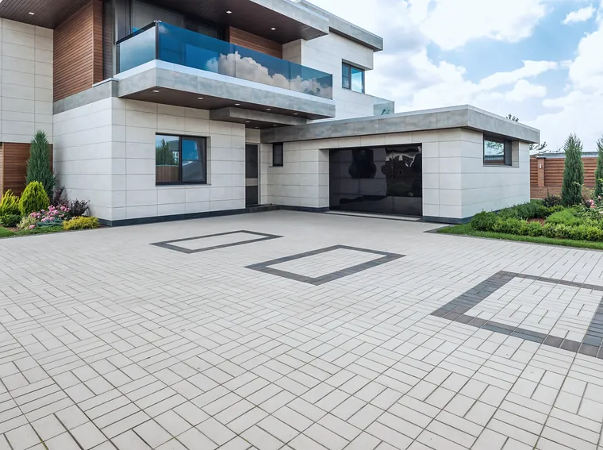

Exterior cleaning · Redlands & Greater Brisbane
Roof, render, driveway, gutters, glass and solar — each cleaned with the method its material needs. Nothing forced, nothing etched, nothing left behind.

Six surfaces, six different methods. Pick the one that’s bothering you.
